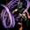
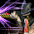

2005～2018.12 武道家 スキル一覧
2018/12/18 武道スキル改変前のデータ。
改変後は、2018/12/18 バランスパッチ反映版を参考にしてください。
| 正拳突き | ||||||||||||||
|---|---|---|---|---|---|---|---|---|---|---|---|---|---|---|
| スキル難易度 | 1 | |||||||||||||
| 必要スキル | なし |
|||||||||||||
| スキル説明 | 左手の拳で攻撃。各種拳技術の基本になるスキルで、突き直後、右手で直接攻撃する他のスキルのスキルレベルがしばらく上昇する。 | |||||||||||||
| レベル | 1 | 2 | 3 | 4 | 5 | 6 | 7 | 8 | 9 | 10 | 20 | 30 | 40 | 50 |
| 消費CP | 0 | |||||||||||||
| 獲得CP | 3.5 | 4 | 4.5 | 5 | 5.5 | 6 | 6.5 | 7 | 7.5 | 8 | 13 | 18 | 23 | 28 |
| ◆物理ダメージ | 0.6 | 1.2 | 1.8 | 2.4 | 3 | 3.6 | 4.2 | 4.8 | 5.4 | 6 | 12 | 18 | 24 | 30 |
| 攻撃速度 | 0.8% | 1.6% | 2.4% | 3.2% | 4% | 4.8% | 5.6% | 6.4% | 7.2% | 8% | 16% | 24% | 32% | 40% |
| 命中率 | 0.15% | 0.3% | 0.45% | 0.6% | 0.75% | 0.9% | 1.05% | 1.2% | 1.35% | 1.5% | 3% | 4.5% | 6% | 7.5% |
| スキルレベル上昇 | 右手スキルのスキルレベルが2上昇(2秒間) | |||||||||||||
| 備考 | 左手スキル | |||||||||||||
| 肘撃 | ||||||||||||||
|---|---|---|---|---|---|---|---|---|---|---|---|---|---|---|
| スキル難易度 | 1 | |||||||||||||
| 必要スキル | ||||||||||||||
| スキル説明 | 右腕の肘で攻撃。突きと同じの基本スキルで、攻撃直後、左手で直接攻撃する他スキルのスキルレベルがしばらく上昇。 | |||||||||||||
| レベル | 1 | 2 | 3 | 4 | 5 | 6 | 7 | 8 | 9 | 10 | 20 | 30 | 40 | 50 |
| 消費CP | 0 | |||||||||||||
| 獲得CP | 2.4 | 2.8 | 3.2 | 3.6 | 4 | 4.4 | 4.8 | 5.2 | 5.6 | 6 | 10 | 14 | 18 | 22 |
| ◆物理ダメージ | 2.5% | 5% | 7.5% | 10% | 12.5% | 15% | 17.5% | 20% | 22.5% | 25% | 50% | 75% | 100% | 125% |
| 攻撃速度 | 0.4% | 0.8% | 1.2% | 1.6% | 2% | 2.4% | 2.8% | 3.2% | 3.6% | 4% | 8% | 12% | 16% | 20% |
| スキルレベル上昇 | 左手スキルのスキルレベルが2上昇(2秒間) | |||||||||||||
| 備考 | 右手スキル | |||||||||||||
| 回転突き | ||||||||||||||
|---|---|---|---|---|---|---|---|---|---|---|---|---|---|---|
| スキル難易度 | 2 | |||||||||||||
| 必要スキル | 正拳突き [6] |
|||||||||||||
| スキル説明 | 左手の拳をねじって殴る。通常の攻撃より威力的で、直後、右手、左足スキルのレベルがしばらく上昇。 | |||||||||||||
| レベル | 1 | 2 | 3 | 4 | 5 | 6 | 7 | 8 | 9 | 10 | 20 | 30 | 40 | 50 |
| 消費CP | 3.3 | 3.6 | 3.9 | 4.2 | 4.5 | 4.8 | 5.1 | 5.4 | 5.7 | 6 | 9 | 12 | 15 | 18 |
| 獲得CP | 1.3 | 2.6 | 3.9 | 5.2 | 6.5 | 7.8 | 9.1 | 10.4 | 11.7 | 13 | 26 | 39 | 52 | 65 |
| ◆物理ダメージ | 1.2 | 2.4 | 3.6 | 4.8 | 6 | 7.2 | 8.4 | 9.6 | 10.8 | 12 | 24 | 36 | 48 | 60 |
| 攻撃速度 | 0.8% | 1.6% | 2.4% | 3.2% | 4% | 4.8% | 5.6% | 6.4% | 7.2% | 8% | 16% | 24% | 32% | 40% |
| 命中率 | 0.2% | 0.4% | 0.6% | 0.8% | 1% | 1.2% | 1.4% | 1.6% | 1.8% | 2% | 4% | 6% | 8% | 10% |
| スキルレベル上昇 | 右手スキル・左足スキルのスキルレベルが2上昇(3秒間) | |||||||||||||
| 備考 | 左手スキル | |||||||||||||
| 貫顎 | ||||||||||||||
|---|---|---|---|---|---|---|---|---|---|---|---|---|---|---|
| スキル難易度 | 3 | |||||||||||||
| 必要スキル | 肘撃 [6] |
|||||||||||||
| スキル説明 | 右腕の肘で敵の顎を攻撃し、クリティカルヒットボーナスが発生。 直後、左手、右足スキルのレベルと致命打確率がしばらく上昇。 | |||||||||||||
| レベル | 1 | 2 | 3 | 4 | 5 | 6 | 7 | 8 | 9 | 10 | 20 | 30 | 40 | 50 |
| 消費CP | 10.5 | 11 | 11.5 | 12 | 12.5 | 13 | 13.5 | 14 | 14.5 | 15 | 20 | 25 | 30 | 35 |
| 獲得CP | 1 | 2 | 3 | 4 | 5 | 6 | 7 | 8 | 9 | 10 | 20 | 30 | 40 | 50 |
| ◆物理ダメージ | 23.5% | 27% | 30.5% | 34% | 37.5% | 41% | 44.5% | 48% | 51.5% | 55% | 90% | 125% | 160% | 195% |
| 致命打率 | 26% | 27% | 28% | 29% | 30% | 31% | 32% | 33% | 34% | 35% | 45% | 55% | 65% | 75% |
| スキルレベル上昇 | 左手スキル・右足スキルのスキルレベルが2上昇(3秒間) | |||||||||||||
| 備考 | 右手スキル | |||||||||||||
 |
連打 | |||||||||||||
|---|---|---|---|---|---|---|---|---|---|---|---|---|---|---|
| スキル難易度 | 3 | |||||||||||||
| 必要スキル | 正拳突き [12]、回転突き [6] |
|||||||||||||
| スキル説明 | 左手を利用して激しい連打で攻撃。敵が少しの間麻痺し、連続攻撃が可能。 直後、右手、下蹴り種類スキルのレベルがしばらく上昇。 | |||||||||||||
| レベル | 1 | 2 | 3 | 4 | 5 | 6 | 7 | 8 | 9 | 10 | 20 | 30 | 40 | 50 |
| 消費CP | 11 | 12 | 13 | 14 | 15 | 16 | 17 | 18 | 19 | 20 | 30 | 40 | 50 | 60 |
| 獲得CP | 2 | 4 | 6 | 8 | 10 | 12 | 14 | 16 | 18 | 20 | 40 | 60 | 80 | 100 |
| ◆物理ダメージ | 22% | 24% | 26% | 28% | 30% | 32% | 34% | 36% | 38% | 40% | 60% | 80% | 100% | 120% |
| 攻撃速度 | 15.6% | 16.2% | 16.8% | 17.4% | 18% | 18.6% | 19.2% | 19.8% | 20.4% | 21% | 27% | 33% | 39% | 45% |
| 命中率 | 0.2% | 0.4% | 0.6% | 0.8% | 1% | 1.2% | 1.4% | 1.6% | 1.8% | 2% | 4% | 6% | 8% | 10% |
| 麻痺確率 | 55% | |||||||||||||
| 敵麻痺時間(秒) | 0.5 | 0.5 | 0.5 | 0.5 | 0.5 | 0.5 | 0.5 | 0.5 | 0.5 | 0.5 | 0.5 | 0.5 | 0.5 | 0.5 |
| スキルレベル上昇 | 右手スキル・下蹴りスキルのスキルレベルが2上昇(3秒間) | |||||||||||||
| 備考 | 左手スキル | |||||||||||||
 |
急所攻撃 | |||||||||||||
|---|---|---|---|---|---|---|---|---|---|---|---|---|---|---|
| スキル難易度 | 4 | |||||||||||||
| 必要スキル | 肘撃 [12]、貫顎 [6] |
|||||||||||||
| スキル説明 | 敵の急所を攻撃し、一定の確率で敵の体力を現在の半分に減らす致命打を与える。直後、左足スキルのレベルがしばらく上昇。 | |||||||||||||
| レベル | 1 | 2 | 3 | 4 | 5 | 6 | 7 | 8 | 9 | 10 | 20 | 30 | 40 | 50 |
| 消費CP | 36.5 | 38 | 39.5 | 41 | 42.5 | 44 | 45.5 | 47 | 48.5 | 50 | 65 | 80 | 95 | 110 |
| 獲得CP | 0 | |||||||||||||
| ◆物理ダメージ | 33.5% | 37% | 40.5% | 44% | 47.5% | 51% | 54.5% | 58% | 61.5% | 65% | 100% | 135% | 170% | 205% |
| 攻撃速度 | 0.4% | 0.8% | 1.2% | 1.6% | 2% | 2.4% | 2.8% | 3.2% | 3.6% | 4% | 8% | 12% | 16% | 20% |
| 致命打率 | 46% | 47% | 48% | 49% | 50% | 51% | 52% | 53% | 54% | 55% | 65% | 75% | 85% | 95% |
| 決定打 | 25.5% | 26% | 26.5% | 27% | 27.5% | 28% | 28.5% | 29% | 29.5% | 30% | 35% | 40% | 45% | 50% |
| スキルレベル上昇 | 左足スキルのスキルレベルが3上昇(3秒間) | |||||||||||||
| 備考 | 右手スキル | |||||||||||||
| 蹴り | ||||||||||||||
|---|---|---|---|---|---|---|---|---|---|---|---|---|---|---|
| スキル難易度 | 1 | |||||||||||||
| 必要スキル | なし |
|||||||||||||
| スキル説明 | 左前蹴りを放つ。直後、右足スキルのレベルと命中率がしばらく上昇。 | |||||||||||||
| レベル | 1 | 2 | 3 | 4 | 5 | 6 | 7 | 8 | 9 | 10 | 20 | 30 | 40 | 50 |
| 消費CP | 1.1 | 1.2 | 1.3 | 1.4 | 1.5 | 1.6 | 1.7 | 1.8 | 1.9 | 2 | 3 | 4 | 5 | 6 |
| 獲得CP | 0.8 | 1.6 | 2.4 | 3.2 | 4 | 4.8 | 5.6 | 6.4 | 7.2 | 8 | 16 | 24 | 32 | 40 |
| ◆物理ダメージ | 3% | 6% | 9% | 12% | 15% | 18% | 21% | 24% | 27% | 30% | 60% | 90% | 120% | 150% |
| 命中率 | 0.1% | 0.2% | 0.3% | 0.4% | 0.5% | 0.6% | 0.7% | 0.8% | 0.9% | 1% | 2% | 3% | 4% | 5% |
| スキルレベル上昇 | 右足スキルのスキルレベルが[1+0.1*SLv]上昇(2秒間) | |||||||||||||
| 備考 | 左足スキル | |||||||||||||
| 回し蹴り | ||||||||||||||
|---|---|---|---|---|---|---|---|---|---|---|---|---|---|---|
| スキル難易度 | 1 | |||||||||||||
| 必要スキル | なし |
|||||||||||||
| スキル説明 | 右後ろ回し蹴り攻撃。 下蹴り種類のスキルのレベルと回避率がしばらく上昇。 | |||||||||||||
| レベル | 1 | 2 | 3 | 4 | 5 | 6 | 7 | 8 | 9 | 10 | 20 | 30 | 40 | 50 |
| 消費CP | 3.1 | 3.2 | 3.3 | 3.4 | 3.5 | 3.6 | 3.7 | 3.8 | 3.9 | 4 | 5 | 6 | 7 | 8 |
| 獲得CP | 0.6 | 1.2 | 1.8 | 2.4 | 3 | 3.6 | 4.2 | 4.8 | 5.4 | 6 | 12 | 18 | 24 | 30 |
| ◆物理ダメージ | 6% | 12% | 18% | 24% | 30% | 36% | 42% | 48% | 54% | 60% | 120% | 180% | 240% | 300% |
| 回避率 | 0.1% | 0.2% | 0.3% | 0.4% | 0.5% | 0.6% | 0.7% | 0.8% | 0.9% | 1% | 2% | 3% | 4% | 5% |
| 攻撃速度 | -15% | -15% | -15% | -15% | -15% | -15% | -15% | -15% | -15% | -15% | -15% | -15% | -15% | -15% |
| 致命打率 | 10% | 10% | 10% | 10% | 10% | 10% | 10% | 10% | 10% | 10% | 10% | 10% | 10% | 10% |
| 回避率上昇時間 | 2秒 | |||||||||||||
| スキルレベル上昇 | 左足スキルのスキルレベルが3上昇(3秒間) | |||||||||||||
| 備考 | 右足スキル | |||||||||||||
 |
かかと落とし | |||||||||||||
|---|---|---|---|---|---|---|---|---|---|---|---|---|---|---|
| スキル難易度 | 2 | |||||||||||||
| 必要スキル | 蹴り [6] |
|||||||||||||
| スキル説明 | 左前蹴り後、そのままかかと落として二度攻撃する。 直後、右足スキルのレベルと命中率がしばらく上昇。 | |||||||||||||
| レベル | 1 | 2 | 3 | 4 | 5 | 6 | 7 | 8 | 9 | 10 | 20 | 30 | 40 | 50 |
| 消費CP | 11.5 | 13 | 14.5 | 16 | 17.5 | 19 | 20.5 | 22 | 23.5 | 25 | 40 | 55 | 70 | 85 |
| 獲得CP | 2.8 | 5.6 | 8.4 | 11.2 | 14 | 16.8 | 19.6 | 22.4 | 25.2 | 28 | 56 | 84 | 112 | 140 |
| ◆物理ダメージ | -47% | -44% | -41% | -38% | -35% | -32% | -29% | -26% | -23% | -20% | 10% | 40% | 70% | 100% |
| 命中率 | 0.15% | 0.3% | 0.45% | 0.6% | 0.75% | 0.9% | 1.05% | 1.2% | 1.35% | 1.5% | 3% | 4.5% | 6% | 7.5% |
| 攻撃回数 | 2回 | |||||||||||||
| スキルレベル上昇 | 右足スキルのスキルレベルが2上昇(2秒間) | |||||||||||||
| 備考 | 左足スキル | |||||||||||||
| 後回し蹴り | ||||||||||||||
|---|---|---|---|---|---|---|---|---|---|---|---|---|---|---|
| スキル難易度 | 2 | |||||||||||||
| 必要スキル | 回し蹴り [6]
|
|||||||||||||
| スキル説明 | 右足の後回し蹴りで広い範囲を攻撃。 弾き飛ばしてダメージを与える。
左手スキルのレベルと回避率がしばらく上昇。 |
|||||||||||||
| レベル | 1 | 2 | 3 | 4 | 5 | 6 | 7 | 8 | 9 | 10 | 20 | 30 | 40 | 50 |
| 消費CP | 16 | 17 | 18 | 19 | 20 | 21 | 22 | 23 | 24 | 25 | 35 | 45 | 55 | 65 |
| 獲得CP | 2 | 4 | 6 | 8 | 10 | 12 | 14 | 16 | 18 | 20 | 40 | 60 | 80 | 100 |
| ◆物理ダメージ | 3% | 6% | 9% | 12% | 15% | 18% | 21% | 24% | 27% | 30% | 60% | 90% | 120% | 150% |
| 回避率 | 0.1% | 0.2% | 0.3% | 0.4% | 0.5% | 0.6% | 0.7% | 0.8% | 0.9% | 1% | 2% | 3% | 4% | 5% |
| 致命打率 | 15% | 15% | 15% | 15% | 15% | 15% | 15% | 15% | 15% | 15% | 15% | 15% | 15% | 15% |
| スキルレベル上昇 | 左手スキルのスキルレベルが3上昇(2秒間) | |||||||||||||
| 備考 | 右足スキル | |||||||||||||
| 飛び蹴り | ||||||||||||||
|---|---|---|---|---|---|---|---|---|---|---|---|---|---|---|
| スキル難易度 | 3 | |||||||||||||
| 必要スキル | 蹴り [12]、かかと落とし [6]
|
|||||||||||||
| スキル説明 | ある程度離れている敵にあっという間に近付いてかかと落とし攻撃。 直後、右足スキルのレベルと命中率がしばらく上昇。 | |||||||||||||
| レベル | 1 | 2 | 3 | 4 | 5 | 6 | 7 | 8 | 9 | 10 | 20 | 30 | 40 | 50 |
| 消費CP | 37 | 39 | 41 | 43 | 45 | 47 | 49 | 51 | 53 | 55 | 75 | 95 | 115 | 135 |
| 獲得CP | 4.5 | 9 | 13.5 | 18 | 22.5 | 27 | 31.5 | 36 | 40.5 | 45 | 90 | 135 | 180 | 225 |
| ◆物理ダメージ | 25% | 30% | 35% | 40% | 45% | 50% | 55% | 60% | 65% | 70% | 120% | 170% | 220% | 270% |
| 命中率 | 0.2% | 0.4% | 0.6% | 0.8% | 1% | 1.2% | 1.4% | 1.6% | 1.8% | 2% | 4% | 6% | 8% | 10% |
| 致命打率 | 20% | 20% | 20% | 20% | 20% | 20% | 20% | 20% | 20% | 20% | 20% | 20% | 20% | 20% |
| 決定打 | 5% | 5% | 5% | 5% | 5% | 5% | 5% | 5% | 5% | 5% | 5% | 5% | 5% | 5% |
| 射程距離 | 武道家の基本攻撃の射程距離の3倍 | |||||||||||||
| スキルレベル上昇 | 右足スキルのスキルレベルが[1+SLv*0.1]上昇(2秒間) | |||||||||||||
| 備考 | 左足スキル | |||||||||||||
| 三連回し蹴り | ||||||||||||||
|---|---|---|---|---|---|---|---|---|---|---|---|---|---|---|
| スキル難易度 | 3 | |||||||||||||
| 必要スキル | 回し蹴り [18]、後回し蹴り [12]、防御 [18]
|
|||||||||||||
| スキル説明 | 三回連続で回し蹴りを放つ。右手スキルのレベルと回避率がしばらく上昇。 | |||||||||||||
| レベル | 1 | 2 | 3 | 4 | 5 | 6 | 7 | 8 | 9 | 10 | 20 | 30 | 40 | 50 |
| 消費CP | 27.5 | 30 | 32.5 | 35 | 37.5 | 40 | 42.5 | 45 | 47.5 | 50 | 75 | 100 | 125 | 150 |
| 獲得CP | 1 | 2 | 3 | 4 | 5 | 6 | 7 | 8 | 9 | 10 | 20 | 30 | 40 | 50 |
| ◆物理ダメージ | -15% | -10% | -5% | 0% | 5% | 10% | 15% | 20% | 25% | 30% | 80% | 130% | 180% | 230% |
| 回避率 | 0.2% | 0.4% | 0.6% | 0.8% | 1% | 1.2% | 1.4% | 1.6% | 1.8% | 2% | 4% | 6% | 8% | 10% |
| 致命打率 | 25% | |||||||||||||
| 攻撃速度 | 50% | |||||||||||||
| 攻撃回数 | 3回 | |||||||||||||
| スキルレベル上昇 | 右手スキルのスキルレベルが4上昇(2秒間) | |||||||||||||
| 備考 | 右足スキル | |||||||||||||
| 下段蹴り | ||||||||||||||
|---|---|---|---|---|---|---|---|---|---|---|---|---|---|---|
| スキル難易度 | 1 | |||||||||||||
| 必要スキル | 回し蹴り [3] |
|||||||||||||
| スキル説明 | しゃがんだ右足で敵の足首の部分を攻撃。 卓越した攻撃力と共にランダムで敵の移動速度が低下する技術。 | |||||||||||||
| レベル | 1 | 2 | 3 | 4 | 5 | 6 | 7 | 8 | 9 | 10 | 20 | 30 | 40 | 50 |
| 消費CP | 5 | 5 | 5 | 5 | 5 | 5 | 5 | 5 | 5 | 5 | 5 | 5 | 5 | 5 |
| 獲得CP | 0.1 | 0.2 | 0.3 | 0.4 | 0.5 | 0.6 | 0.7 | 0.8 | 0.9 | 1 | 2 | 3 | 4 | 5 |
| ◆物理ダメージ | 7% | 9% | 11% | 13% | 15% | 17% | 19% | 21% | 23% | 25% | 45% | 65% | 85% | 105% |
| 回避率 | 回避率 + 50％(2秒間) | |||||||||||||
| 敵の移動速度低下：確率 | 45% | |||||||||||||
| 敵の移動速度の低下 | 50% | |||||||||||||
| 移動速度低下持続時間 | 0.7 | 0.9 | 1.1 | 1.3 | 1.5 | 1.7 | 1.9 | 2.1 | 2.3 | 2.5 | 4.5 | 6.5 | 8.5 | 10.5 |
| 備考 | 下蹴りスキル | |||||||||||||
| 払い蹴り | ||||||||||||||
|---|---|---|---|---|---|---|---|---|---|---|---|---|---|---|
| スキル難易度 | 2 | |||||||||||||
| 必要スキル | 下段蹴り [6]、回し蹴り [6]
|
|||||||||||||
| スキル説明 | しゃがんで右足で敵の足首あたりを攻撃。 正確に当たったら敵はしばらく移動できなくなる。 | |||||||||||||
| レベル | 1 | 2 | 3 | 4 | 5 | 6 | 7 | 8 | 9 | 10 | 20 | 30 | 40 | 50 |
| 消費CP | 25 | 25 | 25 | 25 | 25 | 25 | 25 | 25 | 25 | 25 | 25 | 25 | 25 | 25 |
| 獲得CP | 0.5 | 1 | 1.5 | 2 | 2.5 | 3 | 3.5 | 4 | 4.5 | 5 | 10 | 15 | 20 | 25 |
| ◆物理ダメージ | 18% | 21% | 24% | 27% | 30% | 33% | 36% | 39% | 42% | 45% | 75% | 105% | 135% | 165% |
| 回避率 | 回避率 + 50％(2秒間) | |||||||||||||
| 敵の移動不可確率 | 45% | |||||||||||||
| 敵の移動不可時間(秒) | 1.1 | 1.2 | 1.3 | 1.4 | 1.5 | 1.6 | 1.7 | 1.8 | 1.9 | 2 | 3 | 4 | 5 | 6 |
| 備考 | 下蹴りスキル | |||||||||||||
| 巻き蹴り | ||||||||||||||
|---|---|---|---|---|---|---|---|---|---|---|---|---|---|---|
| スキル難易度 | 3 | |||||||||||||
| 必要スキル | 下段蹴り [12]、払い蹴り [6] |
|||||||||||||
| スキル説明 | 足をからみかけて攻撃。敵を転倒させて、クリティカルボーナスが発生する。 | |||||||||||||
| レベル | 1 | 2 | 3 | 4 | 5 | 6 | 7 | 8 | 9 | 10 | 20 | 30 | 40 | 50 |
| 消費CP | 45 | 45 | 45 | 45 | 45 | 45 | 45 | 45 | 45 | 45 | 45 | 45 | 45 | 45 |
| 獲得CP | 0.5 | 1 | 1.5 | 2 | 2.5 | 3 | 3.5 | 4 | 4.5 | 5 | 10 | 15 | 20 | 25 |
| ◆物理ダメージ | 34% | 38% | 42% | 46% | 50% | 54% | 58% | 62% | 66% | 70% | 110% | 150% | 190% | 230% |
| 回避率 | 回避率 + 50％(2秒間) | |||||||||||||
| 麻痺確率 | 33% | |||||||||||||
| 的麻痺時間(秒) | 0.2 | 0.4 | 0.6 | 0.8 | 1 | 1.2 | 1.4 | 1.6 | 1.8 | 2 | 4 | 6 | 8 | 10 |
| 致命打率 | 1% | 2% | 3% | 4% | 5% | 6% | 7% | 8% | 9% | 10% | 20% | 30% | 40% | 50% |
| 備考 | 下蹴りスキル | |||||||||||||
| 防御 | ||||||||||||||
|---|---|---|---|---|---|---|---|---|---|---|---|---|---|---|
| スキル難易度 | 1 | |||||||||||||
| 必要スキル | 蹴り [3]、回し蹴り [3] |
|||||||||||||
| スキル説明 | 敵の攻撃を受けても押されないでその場で耐える。 被害は通常の90％から半分位まで減少し、攻撃を受けた後も硬直がない。 | |||||||||||||
| レベル | 1 | 2 | 3 | 4 | 5 | 6 | 7 | 8 | 9 | 10 | 20 | 30 | 40 | 50 |
| 消費CP | 3.2 | 3.4 | 3.6 | 3.8 | 4 | 4.2 | 4.4 | 4.6 | 4.8 | 5 | 7 | 9 | 11 | 13 |
| 獲得CP | 0.3 | 0.6 | 0.9 | 1.2 | 1.5 | 1.8 | 2.1 | 2.4 | 2.7 | 3 | 6 | 9 | 12 | 15 |
| 麻痺抵抗 | 71% | 72% | 73% | 74% | 75% | 76% | 77% | 78% | 79% | 80% | 90% | 100% | 110% | 120% |
| 麻痺抵抗持続時間(秒) | 1.5 | |||||||||||||
| 発動確率 | 21% | 22% | 23% | 24% | 25% | 26% | 27% | 28% | 29% | 30% | 40% | 50% | 60% | 70% |
| ダメージ減少量 | 10.5% | 11% | 11.5% | 12% | 12.5% | 13% | 13.5% | 14% | 14.5% | 15% | 20% | 25% | 30% | 35% |
| 備考 | アクティブ(ON/OFF)スキル | |||||||||||||
| 回避 | ||||||||||||||
|---|---|---|---|---|---|---|---|---|---|---|---|---|---|---|
| スキル難易度 | 2 | |||||||||||||
| 必要スキル | 防御 [6]、かかと落とし [3]、後回し蹴り [3] |
|||||||||||||
| スキル説明 | 敵の攻撃を素早く避ける。 | |||||||||||||
| レベル | 1 | 2 | 3 | 4 | 5 | 6 | 7 | 8 | 9 | 10 | 20 | 30 | 40 | 50 |
| 消費CP | 3.3 | 3.6 | 3.9 | 4.2 | 4.5 | 4.8 | 5.1 | 5.4 | 5.7 | 6 | 9 | 12 | 15 | 18 |
| 獲得CP | 0 | |||||||||||||
| 「発動確率(Max 60％)」 | 10.8% | 11.6% | 12.4% | 13.2% | 14% | 14.8% | 15.6% | 16.4% | 17.2% | 18% | 26% | 34% | 42% | 50% |
| 備考 | アクティブ(ON/OFF)スキル | |||||||||||||
|  | 仰け反る | |||||||||||||
|---|---|---|---|---|---|---|---|---|---|---|---|---|---|---|
| スキル難易度 | 3 | |||||||||||||
| 必要スキル | 防御 [12]、回避 [6]、飛び蹴り [3]、三連回し蹴り [3] |
|||||||||||||
| スキル説明 | 敵の攻撃に合わせて体を反らし、残りの攻撃を回避する。 攻撃を受けた後も硬直状態がなく、しばらく無敵な状態になる。 | |||||||||||||
| レベル | 1 | 2 | 3 | 4 | 5 | 6 | 7 | 8 | 9 | 10 | 20 | 30 | 40 | 50 |
| 消費CP | 6 | 7 | 8 | 9 | 10 | 11 | 12 | 13 | 14 | 15 | 25 | 35 | 45 | 55 |
| 獲得CP | 0 | |||||||||||||
| 発動確率 | 16% | 17% | 18% | 19% | 20% | 21% | 22% | 23% | 24% | 25% | 35% | 45% | 55% | 65% |
| 麻痺抵抗 | 81% | 82% | 83% | 84% | 85% | 86% | 87% | 88% | 89% | 90% | 100% | 110% | 120% | 130% |
| 麻痺抵抗持続時間(秒) | 1.1 | 1.2 | 1.3 | 1.4 | 1.5 | 1.6 | 1.7 | 1.8 | 1.9 | 2 | 3 | 4 | 5 | 6 |
| 無敵時間 | 2秒 | |||||||||||||
| 備考 | アクティブ(ON/OFF)スキル | |||||||||||||
|  | 流水撃 | |||||||||||||
|---|---|---|---|---|---|---|---|---|---|---|---|---|---|---|
| スキル難易度 | 4 | |||||||||||||
| 必要スキル | 防御 [18]、回避 [12]、仰け反る [6]、急所攻撃 [6] |
|||||||||||||
| スキル説明 | 敵の攻撃を横に流して顎を殴り攻撃。必ずクリティカルヒットになる。 | |||||||||||||
| レベル | 1 | 2 | 3 | 4 | 5 | 6 | 7 | 8 | 9 | 10 | 20 | 30 | 40 | 50 |
| 消費CP | 31.5 | 33 | 34.5 | 36 | 37.5 | 39 | 40.5 | 42 | 43.5 | 45 | 60 | 75 | 90 | 105 |
| 獲得CP | 1 | 2 | 3 | 4 | 5 | 6 | 7 | 8 | 9 | 10 | 20 | 30 | 40 | 50 |
| 発動確率 | 16% | 16% | 17% | 17% | 18% | 18% | 19% | 19% | 20% | 20% | 25% | 30% | 35% | 40% |
| ◆物理ダメージ | 3.5% | 7% | 10.5% | 14% | 17.5% | 21% | 24.5% | 28% | 31.5% | 35% | 70% | 105% | 140% | 175% |
| 備考 | 必ずクリティカル(ダブルクリティカルではない) | |||||||||||||
| 備考 | アクティブ(ON/OFF)スキル | |||||||||||||
| 白羽取り | ||||||||||||||
|---|---|---|---|---|---|---|---|---|---|---|---|---|---|---|
| スキル難易度 | 5 | |||||||||||||
| 必要スキル |
流水撃 [6]、連打 [12]、正拳突き [24]、回転突き [18] |
|||||||||||||
| スキル説明 | 敵の矢など、遠距離攻撃武器を手で取って防御。 魔法なども受け止めることができる。 | |||||||||||||
| レベル | 1 | 2 | 3 | 4 | 5 | 6 | 7 | 8 | 9 | 10 | 20 | 30 | 40 | 50 |
| 消費CP | 46.5 | 48 | 49.5 | 51 | 52.5 | 54 | 55.5 | 57 | 58.5 | 60 | 75 | 90 | 105 | 120 |
| 獲得CP | 14 | 18 | 22 | 26 | 30 | 34 | 38 | 42 | 46 | 50 | 90 | 130 | 170 | 210 |
| 発動確率 | 21% | 22% | 23% | 24% | 25% | 26% | 27% | 28% | 29% | 30% | 40% | 50% | 60% | 70% |
| 無敵時間(秒) | 0.3秒 | |||||||||||||
| 備考 | アクティブ(ON/OFF)スキル | |||||||||||||
 |
気合 | |||||||||||||
|---|---|---|---|---|---|---|---|---|---|---|---|---|---|---|
| スキル難易度 | 1 | |||||||||||||
| 必要スキル | 正拳突き [3]、肘撃 [3] |
|||||||||||||
| スキル説明 | 気合いを入れて集中力と攻撃力を増加する。気を練る技術。 | |||||||||||||
| レベル | 1 | 2 | 3 | 4 | 5 | 6 | 7 | 8 | 9 | 10 | 20 | 30 | 40 | 50 |
| 消費CP | 0.5 | 1 | 1.5 | 2 | 2.5 | 3 | 3.5 | 4 | 4.5 | 5 | 10 | 15 | 20 | 25 |
| 獲得CP | 12 | 14 | 16 | 18 | 20 | 22 | 24 | 26 | 28 | 30 | 50 | 70 | 90 | 110 |
| 増加攻撃力 | 10% | |||||||||||||
| 増加防御力 | 2 | |||||||||||||
| 持続時間 | 10秒 | |||||||||||||
| キャスティング速度(秒) | 1.25 (20flame) | |||||||||||||
| 怒号 | ||||||||||||||
|---|---|---|---|---|---|---|---|---|---|---|---|---|---|---|
| スキル難易度 | 2 | |||||||||||||
| 必要スキル |
気合 [6]、貫顎 [3] |
|||||||||||||
| スキル説明 | 味方の低下系状態異常を解除する。失敗すると少量の体力回復に留まる。 味方はしばらく低下系攻撃に対して抵抗力を持つようになる。 | |||||||||||||
| レベル | 1 | 2 | 3 | 4 | 5 | 6 | 7 | 8 | 9 | 10 | 20 | 30 | 40 | 50 |
| 消費CP | 5.5 | 6 | 6.5 | 7 | 7.5 | 8 | 8.5 | 9 | 9.5 | 10 | 15 | 20 | 25 | 30 |
| 獲得CP | 0.7 | 1.4 | 2.1 | 2.8 | 3.5 | 4.2 | 4.9 | 5.6 | 6.3 | 7 | 14 | 21 | 28 | 35 |
| 防御力増加量 | 0.5% | 1% | 1.5% | 2% | 2.5% | 3% | 3.5% | 4% | 4.5% | 5% | 10% | 15% | 20% | 25% |
| 麻痺抵抗上昇量 | 17% | 19% | 21% | 23% | 25% | 27% | 29% | 31% | 33% | 35% | 55% | 75% | 95% | 115% |
| 低下系抵抗上昇量 | 17% | 19% | 21% | 23% | 25% | 27% | 29% | 31% | 33% | 35% | 55% | 75% | 95% | 115% |
| 能力上昇持続時間 | 20 | |||||||||||||
| 発動確率 | 66.5% | 68% | 69.5% | 71% | 72.5% | 74% | 75.5% | 77% | 78.5% | 80% | 95% | 110% | 125% | 140% |
| 応急処置量 | 3 | 6 | 9 | 12 | 15 | 18 | 21 | 24 | 27 | 30 | 60 | 90 | 120 | 150 |
| 分身 | ||||||||||||||
|---|---|---|---|---|---|---|---|---|---|---|---|---|---|---|
| スキル難易度 | 3 | |||||||||||||
| 必要スキル |
気合 [12]、怒号 [6]、飛び蹴り [3]、三連回し蹴り [3] |
|||||||||||||
| スキル説明 | 自分の分身を作って敵を混乱させて、敵から受ける攻撃回数を減らす。 | |||||||||||||
| レベル | 1 | 2 | 3 | 4 | 5 | 6 | 7 | 8 | 9 | 10 | 20 | 30 | 40 | 50 |
| 消費CP | 32 | 34 | 36 | 38 | 40 | 42 | 44 | 46 | 48 | 50 | 70 | 90 | 110 | 130 |
| 獲得CP | 0 | |||||||||||||
| 分身数 | 1 | 1 | 1 | 1 | 1 | 1 | 1 | 1 | 1 | 1 | 1 | 2 | 2 | 3 |
| 持続時間(秒) | 33 | 36 | 39 | 42 | 45 | 48 | 51 | 54 | 57 | 60 | 90 | 120 | 150 | 180 |
| 運気 | ||||||||||||||
|---|---|---|---|---|---|---|---|---|---|---|---|---|---|---|
| スキル難易度 | 4 | |||||||||||||
| 必要スキル |
気合 [18]、怒号 [12]、分身 [6]、巻き蹴り [6] |
|||||||||||||
| スキル説明 | 何もしないでじっと立っていればゆっくりと体力を回復させることができる技術。毒や麻痺のような状態異常も早く回復する。 | |||||||||||||
| レベル | 1 | 2 | 3 | 4 | 5 | 6 | 7 | 8 | 9 | 10 | 20 | 30 | 40 | 50 |
| 消費CP | 61 | 62 | 63 | 64 | 65 | 66 | 67 | 68 | 69 | 70 | 80 | 90 | 100 | 110 |
| 獲得CP | 0.1 | 0.2 | 0.3 | 0.4 | 0.5 | 0.6 | 0.7 | 0.8 | 0.9 | 1 | 2 | 3 | 4 | 5 |
| 回復数値 | 1 | 1 | 1 | 1 | 2 | 2 | 2 | 2 | 2 | 3 | 5 | 7 | 9 | 11 |
| 備考 | 効果発動時、異常系低下系効果の持続時間を5秒ずつ減らす | |||||||||||||
| 備考 | アクティブ(ON/OFF)スキル | |||||||||||||
| 烈風撃 | ||||||||||||||
|---|---|---|---|---|---|---|---|---|---|---|---|---|---|---|
| スキル難易度 | 5 | |||||||||||||
| 必要スキル |
気合 [24]、怒号 [18]、運気 [6]、回転突き [18]
|
|||||||||||||
| スキル説明 | 風を起こして攻撃。 | |||||||||||||
| レベル | 1 | 2 | 3 | 4 | 5 | 6 | 7 | 8 | 9 | 10 | 20 | 30 | 40 | 50 |
| 消費CP | 102 | 104 | 106 | 108 | 110 | 112 | 114 | 116 | 118 | 120 | 140 | 160 | 180 | 200 |
| 獲得CP | 0 | |||||||||||||
| ◆物理ダメージ | 60% | 70% | 80% | 90% | 100% | 110% | 120% | 130% | 140% | 150% | 250% | 350% | 450% | 550% |
| 命中率 | 0.4% | 0.8% | 1.2% | 1.6% | 2% | 2.4% | 2.8% | 3.2% | 3.6% | 4% | 8% | 12% | 16% | 20% |
| ノックバック確率 | 33% | |||||||||||||
| ノックバック距離(m) | 1.3 | |||||||||||||
| 射程距離(m) | 3.55 | 3.6 | 3.65 | 3.7 | 3.75 | 3.8 | 3.85 | 3.9 | 3.95 | 4 | 4.5 | 5 | 5.5 | 6 |
[参考]公式サイト